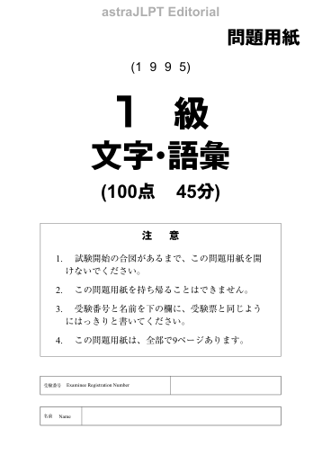
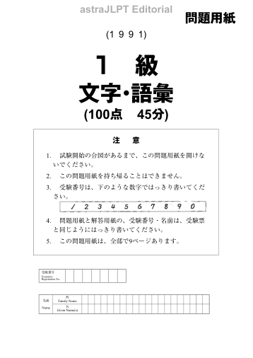
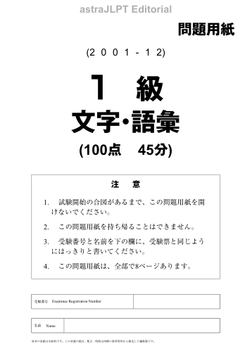
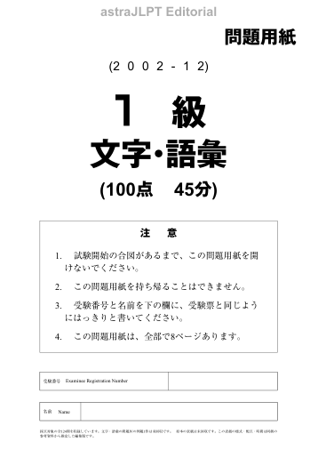

Old 1級
1990–2009 historical collection
Ordered with higher quality papers presented first.
The old level label is preserved; it is not a modern N-level equivalence.




Old written paper
December 2009 ↗
124 questions · Vocabulary, Grammar, Reading
1 without a confirmed answer key
The older chapters
Written papers from the old test, with separate 1級, 2級, 3級 and 4級 collections. These levels are distinct from modern N1–N5.